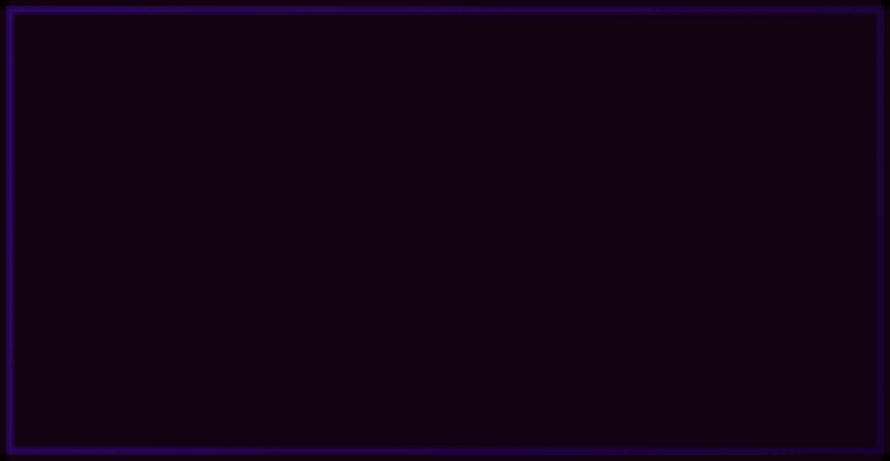

主な機能
経済の概念
経済システムとはゲーム内に通貨が追加され、
専用ショップなど様々なものを買うことができます。
稼ぐには職業に就く必要があります。
専用ショップなど様々なものを買うことができます。
稼ぐには職業に就く必要があります。
育成可能ペット
悪魔の実
カスタムエンチャント
カスタムエンチャント2
コスメティック
カジノ
チェストロック
お絵かき
ログインボーナス
スキンチェンジャー
モンスターAI強化
ワンブロック
ディスコード連携

有効なカスタムエンチャント一覧（CEメニューブックから入手）
- アシッドレイン：周囲3ブロック以内の敵に短時間の毒効果を与えます。
- アドレナリン：体力が低下しているとき、スピードブーストを得られる可能性があります。
- エンジェル：近くの派閥メンバーを回復する。このアイテムを装備していると効果発動。
- 反重力：装備すると高くジャンプできる効果を付与する。
- 自動精錬：鉱石を自動で精錬する確率がある。より多くのインゴットを得られる。
- バトルクライ：戦闘中に10%(+レベルごとに5%)の確率で周囲のプレイヤーを後方へ吹き飛ばす。
- ビーキーパー：ピンチの時にミツバチを召喚する。
- バーサーク：一定確率で自分に攻撃力アップと採掘疲労を付与する。
- ブラスト：レベルに応じて3×レベル×3の範囲のブロックを同時に破壊する。
- ブレスド：一定確率ですべてのデバフ効果を解除する。
- ブラインドネス：敵に暗闇効果を付与する確率がある。
- ブリザード：敵に3ブロック以内のスロウ効果を短時間付与する。
- 爆発：矢が当たった場所にTNTが爆発することがある。
- バーンシールド：装備時に火炎耐性を付与する。
- カクタス：攻撃してきた相手にダメージを与えることがある。
- チャージ：敵プレイヤーを倒すと自分と周囲の味方にスピードアップを付与する。
- コマンダー：装備者と近くの派閥メンバーにヘイスト効果を付与する。
- コンフュージョン：敵に混乱効果を付与することがある。
- クラウチ：戦闘中、しゃがむとレベルに応じてダメージ軽減。
- カースド：敵に採掘疲労を付与することがある。
- サイボーグ：スピード、攻撃力、ジャンプ力を付与し敵を倒すのに役立つ。
- デーモンフォージド：戦闘中、耐久値ダメージを増加させる。
- ディサーマー：敵の防具をランダムで1箇所外すことがある。
- ディスオーダー：敵のホットバーのアイテムの順番を入れ替えることがある。
- ディジー：敵に混乱効果を付与することがある。
- ドクター：攻撃した味方を回復することがある。
- ダブルダメージ：ダメージを2倍にすることがある。
- ドランク：装備すると、力強さ、採掘疲労、鈍足を付与する。
- エンライテンド：攻撃を受けている間に回復することがある。
- エクスキュート：敵の体力が少ないときに力強さを得ることがある。
- エクスペリエンス：鉱石から得られる経験値が2倍以上になることがある。
- ファミッシュド：戦闘中、敵に空腹状態を付与することがある。
- ファストターン：ダメージを増加させることがある。
- フィードミー：戦闘中に回復することがある。
- フォーティファイ：敵に弱体効果を付与することがある。
- フリーズ：敵に鈍足効果を付与することがある。
- ファーネス：鉱石を必ずブロックではなくアイテムに変える。
- ギアーズ：装備するとスピードアップ効果を与える。
- グローイング：装備すると夜間視力を付与する。
- グリーンサム：苗木を右クリックすると、確率で植木を完全に成長させるが、クワの耐久度が減少する。
- ハーベスター：成熟した作物を壊すと、3x3範囲内のすべての成熟した作物を同時に壊す。
- ヘイスト：手に持っていると採掘速度上昇効果を付与する。
- ハルク：装備している間、攻撃力上昇、耐性、鈍足効果を与える。
- アイスフリーズ：敵に鈍足効果を付与することがある。
- インプラント：装備中に移動すると、空腹度が増加し始める。
- インフェステーション：ピンチのときにエンダーマイトとシルバーフィッシュを召喚する。
- インクイジティブ：エンチャントレベルに応じて経験値を2倍以上獲得することがある。
- インソムニア：混乱、採掘疲労、鈍足を付与するが、高確率でダメージが2倍になる。
- インティミデイト：3ブロック以内の敵に短時間弱体化を付与する。
- リーダーシップ：味方が周囲にいると攻撃力が上がる。
- ライフスティール：敵から体力を吸収することがある。
- ライトウェイト：戦闘中に採掘速度上昇を付与することがある。
- ライトニングアロー：矢が落ちた場所に稲妻を落とすことがある。
- マニューバー：攻撃を回避することがある。
- マーメイド：装備していると水中呼吸が得られる。
- モルテン：敵を炎上させることがある。
- マルチアロー：複数の矢を同時に放つことがある。
- ネクロマンサー：ピンチのときにゾンビを召喚する。
- 忍者：装備すると速度と体力が上昇する。
- ナーサリー：歩いている間に体力が回復することがある。
- ニュートリション：戦闘中に空腹度を回復することがある。
- オブリタレイト：敵を後方に吹き飛ばすことがある。
- オーバーロード：装備すると体力が上昇する。
- オキシジェネイト：手に持っている間水中呼吸が得られる。
- ペインギバー：敵に毒を与える確率があります。
- パラライズ：一定確率で敵に高い採掘疲労と鈍足を与えます。
- ピアッシング：一定確率で敵に2倍の大ダメージを与えます。
- プランター：土を耕すとオフハンドまたはホットバーの右から左の順にある種を自動で植えます。
- 引き寄せ：攻撃時、敵が自分に向かって吹き飛ぶことがあります。
- ラディアント：3ブロック以内の敵に短時間火をつけます。
- 激怒：戦闘を続けるほど攻撃力が上昇します。
- 粉砕：一定確率でダメージが2倍になります。
- 報復：近くの味方が倒されるとスピード、再生、採掘速度上昇の効果を得ます。
- ロケット：体力が減っていると後方に吹き飛んで回避します。
- サンドストーム：3ブロック以内の敵を短時間暗闇状態にします。
- 精霊の加護：一定確率でダメージを半分に軽減します。
- セルフデストラクト：死ぬとき、その場所で爆発が発生します。
- ショックウェーブ：敵から攻撃を受けると、ノックバックすることがあります。
- スキルスワイプ：敵と戦っている間に経験値を盗むことがあります。
- スローモーション：攻撃時、敵を鈍足にすることがあります。
- スモークボム：攻撃時、敵に暗闇と鈍足を与え安全に逃げられるようにします。
- スネア：攻撃時、敵に鈍足と採掘疲労効果を付与することがあります。
- スナイパー：敵をこの矢で射ると、高い確率で強力な毒ダメージを与えます。
- スプリングス：装備するとジャンプ力が少し増加します。
- スティッキーショット：矢の着地地点にクモの巣を出現させることがあります。
- ストームコーラー：攻撃時、敵に雷を落とすことがあります。
- システムリブート：瀕死状態で攻撃を受けると回復して満タンになります。
- テイマー：ピンチの際にオオカミが味方として現れます。
- テレパシー：採掘したブロックが自動でインベントリに収納されます。
- ティラー：土を耕すと、耕した土の周囲3×3範囲も自動で耕します。さらに、4ブロック以内に水源があれば土を自動で潤します。
- トラップ：攻撃時、敵に強い鈍足効果を付与することがあります。
- ヴァンパイア：戦いながら時々体力が回復します。
- 鉱脈掘り：隣接する鉱石ブロックをまとめて破壊します。レベルが上がるほど、破壊できる範囲が広がります。
- ヴェノム：攻撃時、敵を毒状態にすることがあります。
- ヴァイパー：敵に毒を付与することがあります。
- ブードゥー：攻撃時、敵を弱体化させることがあります。
- ウィザー：攻撃時、敵に高レベルのウィザー効果を付与することがあります。
有効なカスタムエンチャント一覧（ESエンチャ台や交易などで入手）
- 木こり：しゃがみながら木を掘ると、木全体を瞬時に破壊します
- シールディング ：効果 20-40% 稀に攻撃を反射します
- ポテンシー：効果 20-40%ポーション効果向上、デメリット効果時間短縮
- 収穫：完全に生育した作物を右クリックすると、即座に収穫して再び植え
- ヴィゴラス ：効果 1 最大HPが増加
- プレート ：効果 2 耐久値向上
- 移動速度上昇 ：効果 20-30% 装備時、常に移動速度上昇
- 跳躍力 ：効果 I-II 装備時、常にジャンプ力上昇
- 鋭い槍 ：トライデントシャープネス 0.75-3.75 追加ダメージ
- グラッピングフック ：釣り竿がグラップリングフックになる
- ナイトビジョン：装備時は常に暗視効果
- 採掘速度上昇 ：効果 I-II 採掘速度が向上
- ウィザー付与 ：効果 5-15% 攻撃時、確率でウィザー効果を付与
- 毒付与 ：効果 5-15% 攻撃時、確率で毒を付与
- ライトニング ：効果 5-15% 攻撃時、確率で落雷発生
- 移動速度低下付与 ：効果 4-8% 攻撃時、確率で移動速度低下を付与
- 爆発 ：効果 50-90% 矢が爆発することがある
- 完璧主義者の契約 ：与えるダメージが減少しますが、自分が攻撃を受けるまで攻撃ごとのダメージが増加
- ウィル・オ・ウィスプ ：倒したエンティティが爆発してダメージを与え、周囲を発火
- ラピッドファイア ：複数の矢を連続して発射するチャンス
- サッピング ：経験値倍率が向上 1-2倍
- ライフスティール ：敵にダメージを与えると、そのダメージの5-10%分回復。倒すと追加回復
- エクセキューショナー ：クリーパー、スケルトンなどのモブが頭を落とす確率が上昇
- 防具貫通 ：モブにダメージを与える際、重装甲を着用している各部位に対してダメージ増加
- 効率強化V2 ：縦横3マス破壊
- バーサーカーの契約 ：与えるダメージが増加、受けるダメージも増加